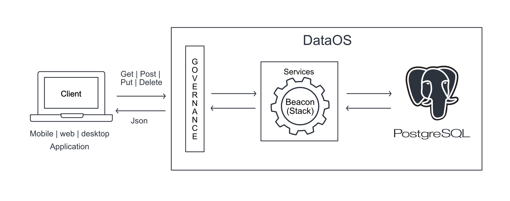
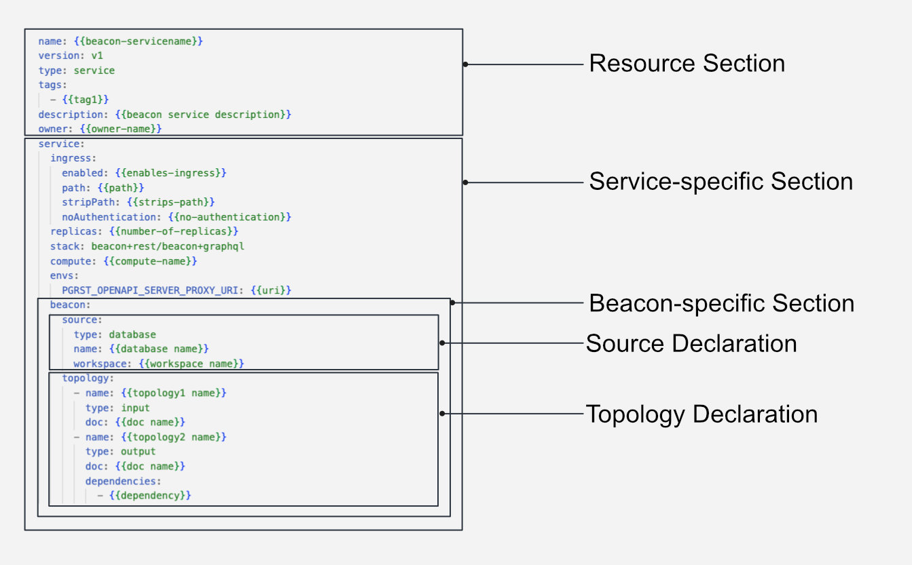

Beacon¶
Beacon is a standalone HTTP server designed to facilitate the exposure of data objects and tables contained within PostgreSQL databases. The server offers a beacon+rest Stack, which exposes entities within a PostgreSQL database through a RESTful API, enabling simple CRUD Operations such as GET, POST, PUT, DELETE.
Beacon Service¶
The Beacon Stack provides a robust solution for exposing a Postgres API endpoint to the external world. However, ensuring secure access, scalability, and seamless integration with other internal and external applications can be complex. This is where the Service Resource becomes a critical factor.
By utilizing the Service Resource, you can ensure governed access to the endpoint, enable scalability in proportion to data growth and facilitate seamless access to all internal and external components and applications within DataOS. You can further enforce governance Policies to ensure secure access to PostgreSQL data, all in a declarative YAMLish manner within DataOS.

In summary, a Beacon Service enables you to expose an API endpoint for a specific table in a PostgreSQL database, allowing you to send data to be stored and interact with the data in the table by sending HTTP requests to the endpoint. With a Beacon Service, your web and other data-driven applications in DataOS can perform CRUD operations on data assets stored in Postgres.
Structure of a Beacon YAML¶

Create a Beacon Service¶
Creating a Beacon Service is a straightforward process that is accomplished within the DataOS platform using a simple declarative YAMLish syntax. While you need to have a basic understanding of Postgres to define migrations, the rest of the process is declarative and straightforward.
Prerequisites¶
Apply the Adequate Access Policy or Assign the Use Case¶
Make sure you have an adequate tag or use case to create a Service. If you have have one, refer to the section below.
Required Database exists¶
Make sure that you have an active Database within DataOS, as per the schema you require. If you have one, navigate to the next step.
Create a YAML file¶
Configure the Service Resource Section¶
At the core of any Beacon Service lies the Service Resource section, which is responsible for defining a Service Resource through a set of YAML attributes. A Service is a persistent process that either receives or delivers API requests. The Beacon Stack is then invoked within the Service to effectuate the exposition of Postgres API.The YAML syntax for the same is provided below.
name: {{stores-db}}
version: v1
type: service
tags:
- {{syndicate}}
- {{service}}
service:
replicas: {{2}}
ingress:
enabled: {{true}}
stripPath: {{true}}
path: {{/stores/api/v1}}
noAuthentication: {{true}}
stack: beacon+rest
envs:
PGRST_OPENAPI_SERVER_PROXY_URI: https://{{dataos-context}}.dataos.app/{{database-path}} # e.g. https://adapting-spaniel.dataos.app/stores/api/v1/
For a deeper understanding of Service Resource and its YAML attributes, please refer to the Attributes of Service Resource YAML page.
Configure Beacon Stack-specific Section¶
The Beacon Stack-specific section, comprises attributes within the YAML configuration file. The YAML configuration is given below:
beacon:
source:
type: database
name: storesdb
workspace: public
topology:
- name: database
type: input
doc: stores database connection
- name: rest-api
type: output
doc: serves up the stores database as a RESTful API
dependencies:
- database # Topology step 2 is dependent on step 1
The table below summarizes the various attributes within the Beacon Stack-specific Section.
| Attribute | Data Type | Default Value | Possible Value | Requirement |
|---|---|---|---|---|
source |
mapping | none | none | mandatory |
type |
string | none | database | mandatory |
name |
string | none | any string | mandatory |
workspace |
string | public | any valid workspace name | mandatory |
topology |
list of mapping | none | none | mandatory |
name |
string | none | any string | mandatory |
type |
string | none | input/output | mandatory |
doc |
string | none | any string | optional |
dependencies |
list of strings | none | any valid dependent topology name | mandatory |
Each of the attributes in this section has been elaborated in detail on the Attribute of Beacon Stack page.
Apply the YAML file¶
You can apply the YAML file to create a Beacon Service within the DataOS environment using the command given below:
dataos-ctl apply -f {{path-of-the-config-file}} -w {{workspace}}
Check Run time¶
dataos-ctl -t service -w {{workspace}} -n {{service-name}} get runtime -r
# Sample
dataos-ctl -t service -w public -n pulsar-random get runtime -r